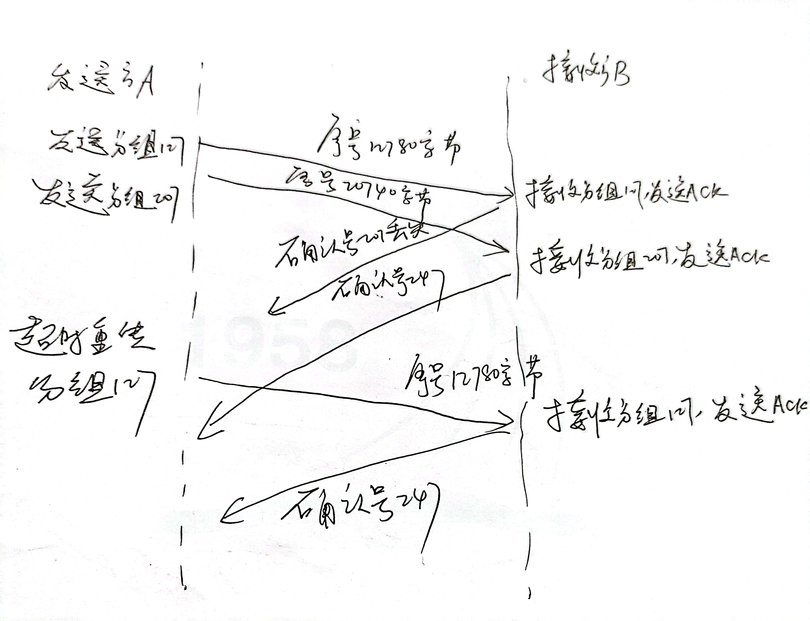

HW3
PB21111686_赵卓
T15
- L/R=15∗8000/109=0.012，因此大约需要
U=X(L/R)/(RTT+L/R)=0.9X=2251。
T22
- a.k-4, k-3, k-2, k-1, k, k+1, k+2, k+3
- k-4, k-3, k-2, k-1的极端情况：此时发送端发送了k-4, k-3, k-2, k-1的报文，接收方收到，但是ACK
报文接收方还没有收到k, k+1, k+2, k+3的极端情况：发送方发送了k, k+1, k+2, k+3报文，接收方还没有收到。
- b.k-5, k-4, k-3, k-2, k-1
- k-4, k-3, k-2, k-1, k的极端情况：发送方发送k-5，接收方收到并且返回ACK(k-5)。发送方收到之前就
超时，重发k-5。发送方收到ACK(k-5)， 发送k-4, k-3, k-2, k-1。接收方收到重发k-5，返回ACK(k-5)。收到
k-4, k-3, k-2, k-1，返回ACK(k-4)，ACK(k-3)，ACK(k-2)，ACK(k-1)。
T23
- 如果报文在信道中不会重新排序：
- 对于GBN协议，发送方窗口最大为k-1。
如果窗口为k，就会出现书中图3-27的情况，如果窗口的所有报文的ACK丢失，都被重传，接收方会认为是新报文。
- 对于SR协议，发送方窗口最大为k/2。
如果大于k-2。就会出现书中图3-27的情况，如果窗口的所有报文的ACK丢失，都被重传。接收方会认为是新报文。
T25
- a. UDP不会对报文进行分片，而TCP会进行分片。
- b. UDP没有拥塞控制和流量控制，可以自己调整发送速度。
T27
- a. 序号207，源端口号302，目的端口号80。
- b. 确认号207，源端口号80，目的端口号302。
- c. 确认号247。
- 如图所示

T37
- a.
- GBN协议：
- A总共发送了9个报文段。最初发送报文段1、2、3、4、5，然后重新发送报文段2、3、4和5。
- B发送了8个ACK。4个序列号为1的ACK，4个序列号为2、3、4的ACK。
- SR协议：
- A总共发送了6个报文段。最初发送到片段1、2、3、4、5，然后再发送到片段2。
- B发送了5个ACK。4个序列号为1、3、4、5ACK，一个序列号为2的ACK。
- TCP协议：
- 总共发送了6个报文段。最初发送到片段1、2、3、4、5，然后再发送到片段2。
- B发送了5个ACK。4个序列号为2的ACK，一个序列号为6的ACK。
- b. TCP协议时间最短，因为TCP使用快速重传，不需要等待时间超时。
T40
- a. 慢启动的时间为：1-6，23-26。
- b. 拥塞避免的时间为：6-16，17-22。
- c. 根据3个冗余ACK检测出来的。
- d. 根据超时检测出来的。
- e. 阈值最初为32，因为在这个窗口大小下，慢启动停止和堵塞避免开始
- f. 当检测到丢包时，该阈值被设置为拥塞窗口值的一半。当在第16轮检测到损失时，拥塞窗口大小为42。因此，在
第18轮传输过程中，阈值是21。
- g. 当检测到丢包时，该阈值被设置为拥塞窗口值的一半。当在第22轮传输期间检测到损失时，拥塞窗口大小为29。
因此，在第24轮传输过程中，阈值为14（取低层14.5）。
- h. 第1轮发送，发送包1，第2轮发送包2-3，第3轮发送包4-7，第4轮发送包8-15，第5轮发送包16-31，第6轮发送包
62-63，第7轮发送包64-96。因此，数据包70在第7轮传输中被发送。
- i. 窗口长度为1，ssthresh为4。
- j. 窗口长度为4，ssthresh为21。
- k. 第17轮发送1个分组；第18轮发送2个分组；第19轮发送4个分组；第20轮发送8个分组；第21轮发送16个分组；
第22轮发送21个分组。因此总共发送52个分组。
T44
- a. 需要1个RTT增加到7个MSS；2个RTT增加到8个MSS；3个RTT增加到9个MSS；4个RTT增加到10个MSS；5个RTT增加
到11个MSS；6个RTT增加到12个MSS。
- b. 第一个RTT发送了6个MSS；第二个RTT发送了7个MSS；第三个RTT发送了8个MSS；在第四个RTT，发送了9个MSS；
在第五个RTT，发送了10个MSS；在第六个RTT，发送了11个MSS。因此，直到时间6 RTT，6+7+8+9+10+11=51MSS
被发送。因此，在6 RTT之前的平均吞吐量是6RTT51MSS=8.5MSS/RTT
T45
- a.一个周期内发送数据包数量为2W+(2W+1)+...+W=∑n=02W(2W+n)=83W2+43W，因此丢包率为L=83W2+43W1。
- b.由于83W2≫43W，因此L≈83W2，即W≈3L8，因此平均速率=433L8⋅RTTMSS=RTTL1.22⋅MSS
T46
- a.1个RTT发送的字节数为10M∗150ms=1.5MB，窗口长度最大为1.5Mb/(1500∗8)=125。
b.平均窗口为长度最大为0.75∗125=93。
平均吞吐量 93∗1500∗8/150ms=7.44Mbps。
c.不考虑慢启动状态，即直接从W/2开始拥塞避免状态，窗口从62到125，经历63个RTT，9.45s。